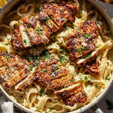

Marry Me Chicken

Description
Marry me chicken is sautéed chicken in a creamy sun-dried tomato sauce.
You can serve it with pasta as suggested or on its own. They say the way
to someone's heart is through their stomach, and this is worthy of a
marriage proposal!
Ingredients
- 1 ½ pounds skinless, boneless chicken breast halves
- 2 tablespoons butter
- 3 cloves garlic, minced
- ½ teaspoon dried oregano
- ¼ teaspoon ground thyme
Directions
-
Gather ingredients. Preheat the oven to 350 degrees F (175 degrees C).
-
Place chicken breasts on a flat work surface. Slice horizontally through
the middle, being careful not to cut all the way through to the other
side. Open the 2 sides and spread them out like an open book to
butterfly.
-
Melt butter in a large, oven-safe skillet over medium-high heat. Add
garlic, oregano, thyme. Sauté until fragrant, about 30 seconds.